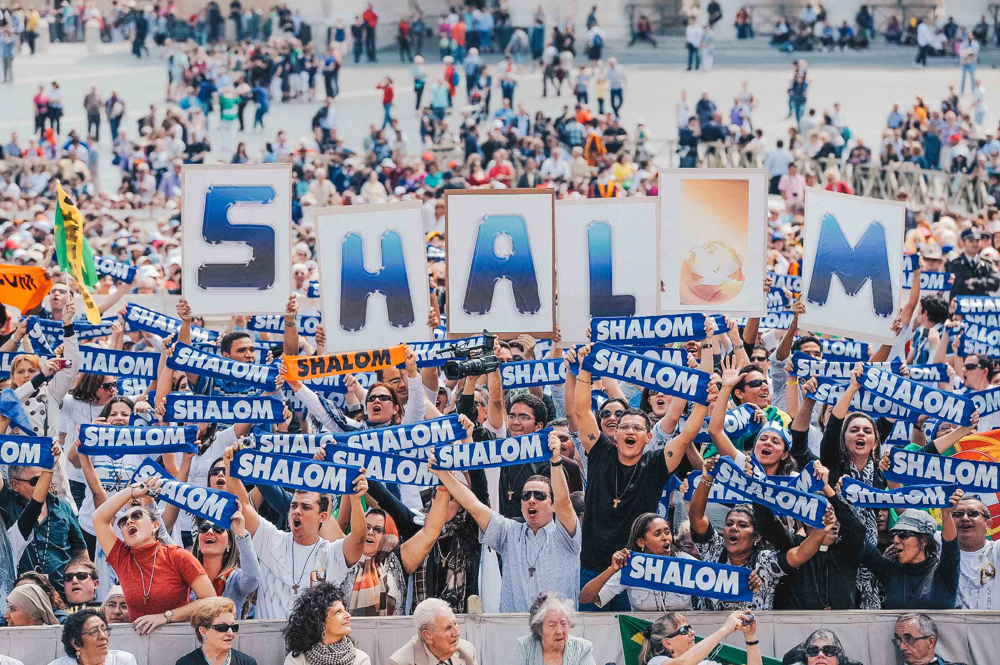

A Comunidade
A Comunidade Católica Shalom é uma Associação Privada Internacional de Fieis, com personalidade jurídica, reconhecida pela Santa Sé com o decreto do dia 22 de fevereiro de 2007, junto ao então Pontifício Conselho para os Leigos (cujas competências e funções são atualmente assumidas pelo Dicastério para os Leigos, a Família e a Vida). Na mesma data, em 2012, seus estatutos tiveram sua aprovação definitiva.
Presente em dezenas de países do mundo, a Comunidade Católica Shalom é formada por homens e mulheres que, na diversidade das formas de vida presentes na Igreja, engajam-se em uma vida comunitária e missionária com a finalidade de levar o Evangelho de Jesus Cristo a todos os homens e mulheres, especialmente aqueles distantes de Cristo e da Igreja.

Carisma Shalom
Em cada tempo, o Espírito Santo concede à Igreja graças necessárias para que ela responda aos desafios contemporâneos. Carisma é um desses dons divinos derramados sobre a Igreja para renová-la e atualizar a vivência do Evangelho. Assim, foi manifestado ao mundo o Carisma Shalom, que desabrochou no coração de Moysés Azevedo durante encontro com o Papa João Paulo II, em 1980. Deus chamou pessoas a assumir essa graça em suas vidas, dando-lhes uma vocação específica: Shalom.
Jesus é o Shalom do Pai para o mundo, a verdadeira e única Paz que a humanidade pode ter. Como os discípulos de Cristo foram enviados por Ele, naquela ocasião, para implantar a Paz no coração dos homens, os vocacionados são chamados a anunciá-la com a vida e o testemunho. “Ser Shalom” significa, pelo poder do Espírito Santo, ser discípulo e ministro da Paz e levar o próprio Cristo a quem por Ele espera.
Caminho Vocacional
Se você deseja trilhar um caminho de discernimento vocacional na Comunidade Shalom, procure engajar-se em um grupo vocacional na missão Shalom mais próxima da sua cidade, ou entre em contato com a Assessoria Vocacional para trilhar o “caminho vocacional à distância” através do email vocacionaladistancia@comshalom.org.
O Caminho Vocacional tem a duração mínima de um ano, iniciando com o Encontro Vocacional Aberto (no início de cada ano).
Cada vocacionado é assistido e orientado por um Acompanhador Vocacional (diretor espiritual) para, na escuta da vontade de Senhor, discernir sobre o chamado à vocação Shalom ou a uma outra vocação na Igreja, sobre o tempo de amadurecimento necessário para dar o passo concreto em direção ao ingresso no postulantado da Comunidade de Vida ou de Aliança.
Comunidade de Aliança
A Comunidade de Aliança é chamada a seguir Jesus Cristo em meio à vivência familiar e às atividades profissionais, assumindo o compromisso de vivê-las segundo a vocação Shalom. Seus membros devem ser “luz do mundo e sal da terra” nos meios seculares. Reúnem-se duas vezes por semana em Células Comunitárias onde rezam, cultivam a vida fraterna e recebem formação segundo a Palavra de Deus, o Magistério da Igreja e o Carisma Shalom.
Comunidade de Vida
Na Comunidade de Vida, nossa realização não estará mais naquilo que o mundo pode oferecer, mas estará exatamente na renúncia a tudo isso, para uma dedicação plena a Deus e ao serviço de Sua Vinha” (Estatutos da Comunidade Shalom).